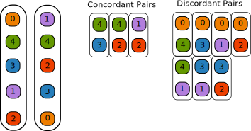
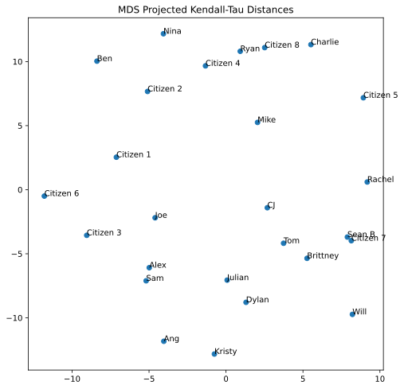

Assignment 4: Fair Elections of Superheros (40 Points)
Chris Tralie
Due Tuesday 4/6/2021
Overview / Logistics
The purpose of this assignment is to give you practice with recursion and ideas from permutation theory/sorting in a fun application to which the whole class has contributed: fair elections of superheros. Each member of the class ranked a subset of superheros that students volunteered during the ice breaker at the beginning of the course. In this assignment, we will define mathematically an optimal "average ranking" that incorporates everyone's choices in a fair and even way, and we will explore computational issues that arise when we attempt to create algorithms to compute this average ranking.
Though this is a pretty whimsical application of election theory, hopefully it will get you thinking about some of the computational issues involved with ranked choice voting as people begin to reckon with the myriad issues we have with fairness in our current democractic system. Click here to read a recent Time article on this topic.
Click here to download the starter code for this assignment. You will be editing ranking.py. Less code has been provided for you on this assignment relative to other assignments, but there is code for loading in the rankings and plotting a dimension reduced version of all pairwise ranking comparisons.
Learning Objectives
- Implement an exact and an approximate version of the same algorithm.
- Use recursion to implement both efficient and brute source solutions to problems.
- Manage permutations, orders, and sorts in arrays.
- Be introduced to the the notion of an algorithm reduction.
What To Submit
Please submit your file ranking.py to canvas. Please also submit answers to the following questions on Canvas
- The name of your buddy, if you chose to work with one.
- Approximately how many hours it took you to finish this assignment (I will not judge you for this at all...I am simply using it to gauge if the assignments are too easy or hard)
- Any suggestions if I run this assignment again?
- Any other concerns that you have. For instance, if you have a bug that you were unable to solve but you made progress, write that here. The more you articulate the problem the more partial credit you will receive (fine to leave this blank)
Background
Our overall goal in this assignment is to do rank aggregation, or to find some kind of "average ranking" that makes sense from a set of rankings. Such algorithms can be thought of as addressing a final order in ranked choice voting elections.
To keep things simple, if we have N items we're ranking, we'll label them from 0 to N-1 in some arbitrary order. In this assignment, we'll be using the superhero votes that students cast, and we'll use the following labels, obtained by sorting them in alphabetical order
0": Captain America 1": Deadpool 2": Dr. Doofenshmirtz 3": Megamind 4": Spiderman 5": The Flash 6": The Joker 7": Thor
So, for instance, if someone gives the rankings
- Dr. Doofenshmirtz
- Deadpool
- Spiderman
- Thor
- Megamind
- The Joker
- The Flash
- Captain America
then this would correspond to the list 2, 1, 4, 7, 3, 6, 5, 0. I have intentionally kept the list small so we can explore all permutations of this list in some later tasks.
Kendall-Tau Distance
Before we do rank aggregation, we need to define a notion of distance/dissimilarity between two rankings. Once we do, we can state our problem of rank aggregation as finding a ranking that minimizes the sum of the distances of the aggregated ranking to all the rankings. The distance we will use is known as the Kendall-Tau distance. This is simply defined as the number of pairs that occur in a different order between the two rankings. Each such pair is known as a "discordant pair," while pairs that agree are known as "concordant pairs." For example, consider the following two rankings:
0, 4, 3, 1, 2
1, 4, 2, 3, 0
The image below shows that there are 7 discordant pairs out of all possible 10 pairs in this example. Therefore, the Kendall-Tau distance between them is 7.
In general, if two rankings are the exact reverse of each other, the Kendall-Tau distance will be maximized, and if they are exactly the same, the Kendall-Tau distance will be 0. For 5 items, the maximum distance is 10 (since there are 10 pairs in 5 items), so the above example reflects two rankings which are quite different.
Efficiently Computing The Kendall-Tau Distance
A brute force way to compute the Kendall-Tau distance to compare the order of every pair between the two rankings. A ranked choice of N items, this is N(N-1)/2 pairs to check, which is O(N2) checks. We can do better, however, by exploiting sorting algorithms. In algorithms jargon, we reduce the Kendall-Tau distance to comparison-based sorting. Since we know such algorithms that run in worst-case O(N log N) time, we can beat the naive O(N2) scheme we get from following the definition too literally. For example, let's again consider the following two rankings
0, 4, 3, 1, 2
1, 4, 2, 3, 0
If we relabel the numbers so that the first list is strictly ascending, aka using the following relabelings
- 0 stays at 0
- 1 becomes 3
- 2 becomes 4
- 3 becomes 2
- 4 becomes 1
Then we get the following lists
0, 1, 2, 3, 4
3, 1, 4, 2, 0
Then, we can simply count the number of inversions in the second list. An inversion is a pair of numbers which is in the wrong order. In the above example, we see that the pairs (3, 1), (3, 2), (3, 0), (1, 0), (4, 2), (4, 0), (2, 0). There are 7 total inversions, which matches the Kendall-Tau distance we computed.
Since inversions consist of pairs that are out of order, we can count them by putting the numbers in this list into order via a sorting routine. One way is to simply count the number of swaps that insertion sort does to put that list in order. This correctly computes the Kendall-Tau distance, but it takes O(N2) time in the worst case (since there can be up to N*(N-1)/2 discordant pairs if the lists are the reverse of each other). The one advantage of this technique is that we're only using O(N) memory, whereas a more naive technique may have actually stored all O(N2) pairs in memory for one to check against the other.
If we think a little harder, though, we can also reach the O(N log N) computational worst case bound by shoehorning the merge sort algorithm, which is O(N log N) in the worst case, into counting the number of inversions. Let's now construct such an algorithm and prove its correctness as we go. Somehow, we will have to count multiple inversions in a single step to avoid the O(N2) worst case. Recall that the merge sort algorithm looks as follows (ignoring the base case for brevity)
Up to this point, we've simply had merge sort operate on arr by reference, but we can also have it return the number of inversions it detected. If we do this, we can recursively compute the inversions as
In other words, we recursively count the inversions it took when we were sorting the first half and second half, and then we count the remaining inversions that occur when we merge them together.
Just as when we were doing the sorting, the challenge / meat of the work here becomes to count the inversions in the merge step. Review the code you wrote in module 15, and recall that the first loop in the merge step keeps track of an index i on the left half and an index j on the right half, as show below:One possibility is that all of the elements on the left side are less than all of the elements on the right side, in which case everything is sorted already. The first merge loop will then take all of the elements from the left, incrementing i until we get up to mid. It follows, then, that picking an index from the left side should not add any inversions.
However, if at a particular iteration of this loop we take the element at index j on the right side as the next element that we merge in, then that means that x[j] is less than everything between index i and index mid, since the left hand side is sorted. Thus, if we pick x[j] to go next, then we must add mid-i+1 to the total number of inversions resolved while merging. And that's it! The last two loops simply fill out items that are already in order that are left.
Kemeny Optimal Rank Aggregation
Now that we have developed the Kendall-Tau distance to measure the dissimilarity of a pair of rankings, we can define a Kemeny Optimal Ranking over a set of M rankings to complete the election. A Kemeny Optimal rank has the very nice property of being a Condorcet method, which means that the candidate who gets the first spot would always win the majority vote in a head-to-head election against any of the other candidates, based on the rankings that were submitted.
A Kemeny Optimal ranking minimizes the sum of the Kendall-Tau distances to all M rankings. In other words, it is a ranking which minimizes pairwise disagreements between all people who voted. As it turns out, it is provably hard to compute this distance exactly, but you will work on a brute force recursive algorithm to achieve this, and to compare it to more efficient, approximate answers.
Programming Tasks
In the starter code, you will see a method called load_rankings which loads the class rankings from a text file that's been provided in the starter code. There is a list of 8 superhero strings in alphabetical order. Then, the rankings of each student are represented as arrays of numbers between 0 and 7 which index this array. All of the rankings are stored in a dictionary, where the key is the student's name as a string, and the value is such a list. The data is shown below
Computing The Kendall-Tau Distance (12 Points)
Fill in the method kendall_tau to compute the Kendall-Tau distance between two rankings. For N rankings, your method should run in O(N log N) time and use O(N) space.
To test this on the example in the background, you can write the code
If this works, you should see an output of 7, as explained in the background. For a more comprehensive example, you can run the method plot_mds_distances, which will use a method known as multidimensional scaling (MDS) to come up with a set of 2D coordinates that best preserve the Kendall-Tau distances between every pair of raters (though it will usually introduce some distortion, for a similar reason to the fact that it's impossible to create a square map of the earth without stretching some areas). If you run the code below
You should see the following plot

You can study this plot to choose your movie buddies who are close to you in your preferences!
Diameter (6 Points)
As hinted by the MDS example above, the The Kendall-Tau distance is truly a distance, in the sense that it is a metric space. Even though we can't perfectly visualize it spatially without error, we can still reason geometrically about it with numerics. For instance, we can search for the two rankings which are closest to each other in this space. In this case, those would be
who are at a distance of 1 from each other; they agree except for the single swap of 0 and 4 at the beginning. We will also find this is true for Sean B and Citizen 7, who agree except for a swap of 1 and 6 at the beginningActually, we see here some of the distortion that's introduced in the MDS plot above, because Alex and Sam appear to be slightly further apart than Sean B and Citizen 7, even though both pairs are at a Kendall-Tau distance of 1.
Aside from closest rankings, we can also define the opposite notion of the two ratings that are furthest apart from each other, which we refer to as the "diameter." Write a method that takes in the rankings dictionary, and which prints out the two people who achieve the diameter, along with their rankings and the Kendall-Tau distance between them. For M rankings and N items, your method should run in O(M2 N log(N)) time. If this worked properly, you should see that Ang and Citizen 8 are the most different, with 28 pairwise disagreements (in fact, they are exact reverses of each other!). You might take inspiration by studying the code in plot_mds_distances, which does some similar preprocessing to the code you will have to write.
Average Rank Aggregation (7 Points)
We discussed the Kemeny optimal rank aggregation, but there is a simpler technique we can try first to incorporate everyone's votes. We can think of every ranking as giving rise to a place number associated to each index. For example, if a number shows up at index 6 in the a permutation, we give it a place of 7 (since we're zero-indexed). We then simply average these place numbers to get a final average place. For example, in our rankings, we get the following averages:
which leads to these results in the election if we sort in ascending order of average place number
Expressed as a list, this corresponds to the permutation [4 1 6 0 7 2 3 5]
To complete this task, you should create a method get_average_rankings that accepts the parameters superheros and raters and which prints out the superheros in the order of their average aggregated rankings. For N choices and M rankings, your method should run in O(MN) time. If you've computed averages at each index, you can simply use the np.argsort method to figure out their order, rather than using your own sorting method.
Brute Force Kemeny Optimal Ranking (15 Points)
The above answer seemed to match peoples' preferences, but what about the Kemeny Optimal rank? Unfortunately, there is no known way to compute this efficiently. But we can create a brute force scheme to recursively examine every permutation and find the one which minimizes the sum of the Kendall-Tau distances to all rankings. In this case, this is doable, because we only have 8 alternatives, and 8! = 40320, so we can just crunch through this number of possibilities (though many more superheros than this would be intractable). Create a recursive method which does this. You can use the permutation enumeration code from module 14 as a starting point. You will probably want to pass a python dictionary by reference recursively that stores the minimum cost seen so far, as well as a copy of the permutation that achieved that cost (you can use list.copy() to copy it over).
If this works correctly, you should get the following permutation as the one that minimizes the sum of Kendall-Tau distances:
[1, 4, 0, 6, 7, 5, 2, 3]
Let's look at what characters these are and compare them side by side with the average ranking
| Average Raking | Kemeny Optimal |
Interestingly, the trends are the same, but there are little swaps here and there;
- Deadpool/Spiderman got flipped at the front
- Captain America/Thor/The Joker got shuffled in the middle
- The Flash/Dr. Doofenshmirtz/Megamind got shuffled at the end